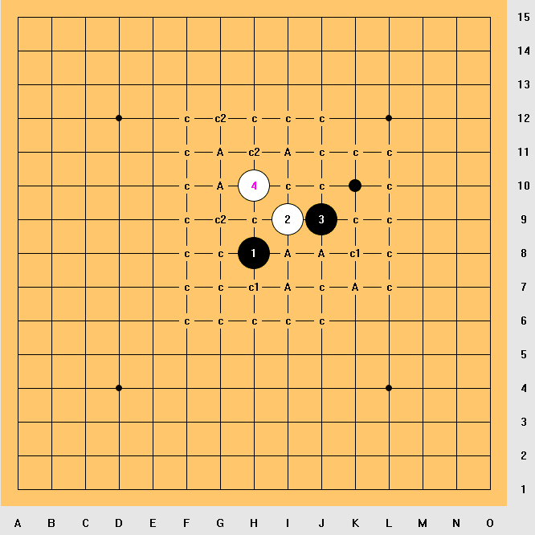
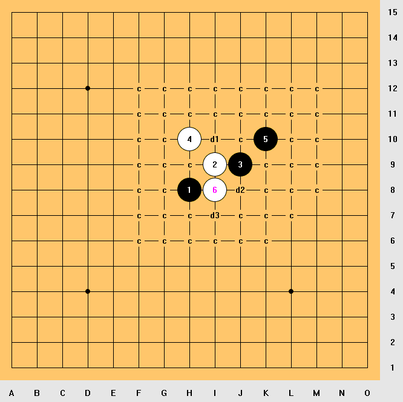
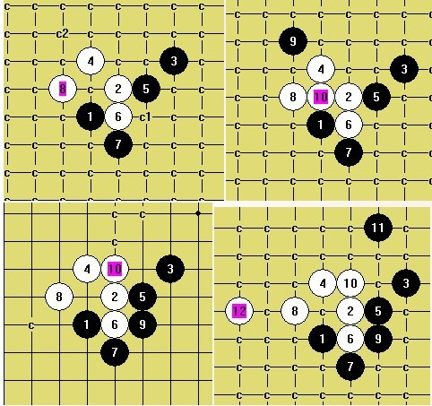
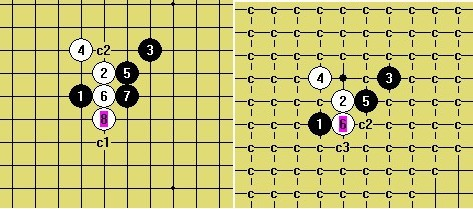

【山口规则】峡月9打黑必败地毯谱
#1 【山口规则】峡月9打黑必败地毯谱 作者：雄鹰王 发表时间：2013-10-25 22:03:02

上图中的白4证明山口规则峡月局9打黑棋必败。其中一个最近拆出来必败的打点是4上面的c2，地毯谱详见附件。
另外抛出一个问题：上图中黑点的那个打点是否可以地毯？求高人解答！

［ 屏蔽同学于 2013-10-25 22:56:47 时花20金币送鲜花一朵］
［ 屏蔽同学于 2013-10-25 22:56:47 时花20金币送鲜花一朵］
［ 失落刀 于 2013-10-25 23:30:05 时奖励此帖[金币加 100 威望加1］
［ 日月丽天同学于 2013-10-26 8:29:03 时花20金币送鲜花一朵］
［ 日月丽天同学于 2013-10-26 8:29:03 时花20金币送鲜花一朵］
［ 日月丽天同学于 2013-10-26 8:29:03 时花20金币送鲜花一朵］
［ 伤情路同学于 2013-10-26 11:36:04 时花20金币送鲜花一朵］
［ 伤情路同学于 2013-10-26 11:36:04 时花20金币送鲜花一朵］
［ 伤情路同学于 2013-10-26 11:36:04 时花20金币送鲜花一朵］
［ 伤情路同学于 2013-10-26 11:36:04 时花20金币送鲜花一朵］
［ 伤情路同学于 2013-10-26 11:36:04 时花20金币送鲜花一朵］
［ 伤情路同学于 2013-10-26 11:36:04 时花20金币送鲜花一朵］
［ 小红眼镜同学于 2013-10-26 12:48:46 时花20金币送鲜花一朵］
#2 Re:【山口规则】峡月9打黑必败地毯谱 作者：雄鹰王 发表时间：2013-10-25 22:04:26
其他的一些比较强的打点，诸如图中的c1，c2啊，论坛里面应该都已经发过地毯谱了，所以这里不再重复。#3 Re:【山口规则】峡月9打黑必败地毯谱 作者：日月丽天 发表时间：2013-10-26 8:28:22
分卷压缩忘了操作，想下载下载不了，但你这个第2个图上d3的7，是不是这样可以简单白地毯

3，5交换通外峡月的变化
［ 失落刀同学于 2013-10-26 17:08:41 时花20金币送鲜花一朵］
#4 Re:【山口规则】峡月9打黑必败地毯谱 作者：日月丽天 发表时间：2013-10-26 9:12:53
第2个7地毯

还有留一个强7，大家再试一试
 明教外峡月变化分支.rar
明教外峡月变化分支.rar
［ 失落刀 于 2013-10-26 17:08:18 时奖励此帖[金币加 100 威望加1］
#5 Re:【山口规则】峡月9打黑必败地毯谱 作者：天鹜 发表时间：2013-10-26 11:02:37
这是要把斜月4打地毯掉的节奏吗？
#6 Re:【山口规则】峡月9打黑必败地毯谱 作者：伤情路 发表时间：2013-10-26 11:35:51
雄鹰王各种溪峡月地毯啊..获益不浅
#7 Re:【山口规则】峡月9打黑必败地毯谱 作者：雄鹰王 发表时间：2013-10-27 15:37:25
还差最后一路，目测相当蛋疼，应该地毯不掉吧：
#8 Re:【山口规则】峡月9打黑必败地毯谱 作者：侯军学棋 发表时间：2013-10-27 20:43:45
哪里发的有谱啊
#9 Re:【山口规则】峡月9打黑必败地毯谱 作者：侯军学棋 发表时间：2013-10-27 22:10:27
#10 Re:【山口规则】峡月9打黑必败地毯谱 作者：屏蔽 发表时间：2013-10-27 22:47:48
上面这个5的思路我觉得一点也不简单。
#11 Re:【山口规则】峡月9打黑必败地毯谱 作者：侯军学棋 发表时间：2013-10-27 22:53:16